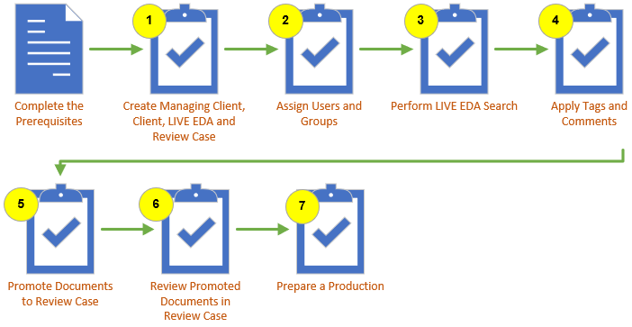
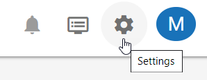

An
This topic contains high-level procedures to help you get started using

The following table shows the prerequisites that must be in place before you start.
|
Task |
Notes |
Links |
|---|---|---|
|
Configure |
|
|
|
Select Connectors and Custodians |
Take time to consider what data sources and custodians that you want to search. Your selection determines which live data will be included in the case. |
|
When starting with
Two levels of clients help you identify and manage cases:
Managing Clients
Clients
These are hierarchical, meaning Clients are assigned under Managing clients and you must create a Managing Client before you can create a Client.
Managing Clients provide a basis for case organization and tracking for organizations that perform work on behalf of other clients. For service providers, managing clients are the companies and firms the provider does business with. For law firms, the firm itself is often the managing client.
Clients provide a further level of identification and are typically reflective of whom the case is being hosted for. For law firms this may be the same as the managing client or may be individual clients; for service providers, different secondary clients may also be appropriate. Apply these client concepts to your company’s business configuration.
Cases allow you to organize your data and documents into individual eDiscovery projects, from in-place assessment through initial data ingestion, review and production.
Before creating your Managing Client and Clients, consider your naming conventions to help ensure consistency and clear identification.
For detailed instructions, see
One you have created your Managing Clients and Clients, you can create and assign Cases. For detailed instructions, see
User and group management is located in the System Manager, accessed from the gear icon  at the top-right corner of the screen.
at the top-right corner of the screen.

From here, you have the ability to create or import new users, create new groups, and assign users, permissions, and cases to groups. In addition, you can also modify and delete groups and users. For more information on the System Manager, see
Moreover, in the System Manager you have the ability to create contacts, security (or permission) templates, copy stations, and storage locations for incoming media, as well as configure your environment settings. For more information, see
Super Admin permissions are required to create users. Identify
needed users and gather/identify basic information (names, email addresses,
passwords). For detailed instructions, see
Administrators have the ability to create groups, assign users to a group, grant permissions to a group, and assign groups to cases. For detailed instructions, see
|
|
Note: Users are not assigned permissions directly. Rather, permissions are set at the group level and filter down to the users assigned to them. Similarly, users cannot be assigned to cases directly. They must first be assigned to groups, and those groups assigned to cases. |
A
Open the
There are multiple ways to search within the
Quick Search
Messages (Emails)
IM (Slack or Teams)
Files
Federated
Advanced
For detailed instructions on searching in
In
When you are satisfied with the search performed in your
In the Review module, reviewers analyze the documents that belong to the case. Reviewing a case is an iterative process and the review tasks and the order that the review tasks are completed depends of the needs of your business.
The following table shows the prerequisites that must be in place before you start:
|
Task |
Notes |
|---|---|
|
Assign Privileges |
Make sure all users have the proper permissions assigned to them before reviewing a case. Permissions determine what activities users are allowed to undertake in Review. See |
|
Disable Pop-up Blocker |
If you use a pop-up blocker in your browser, make sure to disable it for |
|
Tags and Coding Forms |
To tag documents and make use of coding forms, both need to already have been defined in your case. You can create new tags and coding forms in the Case Settings area of the Review module. See |
There are eight fields in the Review case that show the metadata of the promoted item(s)/document(s), as described in the following table.
|
component |
Description |
|
EDACASE |
The |
|
EDADOCID |
The ID of the item/document. Use this value to find the same document in |
|
EDAPROMOTIONTIME |
The date and time of promotion. |
|
EDAPROMOTIONUSER |
The |
|
EDAPROMOTIONNAME |
The user supplied name given to the data set at time of promotion. |
|
EDADOCTAGS |
Any document tags applied in Live EDA prior to promotion. |
|
EDACONNECTORNAME |
The source connector used to gather the data for promotion. |
|
EDAPROTECTIONLABEL |
Included for data using MIP (Microsoft Information Protection. |
To add the column fields populated with the metadata of the data set promoted from the
The item/document list displayed in the Review Grid shows the data that has been promoted from the
There are multiple ways to search your data within the Review module. The Visual Search dashboard and Advanced Search window are two options for creating searches. For a general overview of searching, see
Visual Search enables you to perform and review searches by using one of three 2-dimensional charts as well as a Concept Wheel. This type of searching lets you view results in a manner that correlates between two or more data fields, or in relation to a data set as a whole.
You can also combine text-based and metadata-based criteria into a single search, with the options to specify a valid date range and to include document family members. For detailed instructions, see
Advanced Search allows you to easily construct complex search expressions or specialized searches and display results in the Results tab. Searches can also be saved for later use or for specific tasks. For example, Active Learning Disabled batches must be based on a saved search.
For detailed instructions on creating advanced searches, see
Saved searches can be public, private, or they can
be limited to certain user groups that have access to the case or review
batch in which the search is created/saved. Search access is managed through
folders. Managing searches are the same in both the Visual Search dashboard and Advanced Search. For detailed instructions, see
Reviewing documents in a case is a multi-step and iterative process. The review tasks and the order that the review tasks are completed depends of the needs of your business. For detailed instructions, see
After selecting your documents, reviewers may:
Documents can be reviewed within a Review Pass or outside of a Review Pass. Once your documents are selected, the process of reviewing and tagging documents is the same, whether inside or outside of a review pass. For more information, see
|
|
Note: Review activities require a variety of permissions that are defined by the |
Review passes
allow you to manage the review. For example, a first pass review may be used to quickly identify documents as responsive versus non-responsive, while a privilege review pass would be used to identify documents for privilege and the specific privilege reason. Review passes are created and managed
case by case in the
There are two different types of review passes you can use: an Active Learning enabled review pass and an Active Learning disabled review pass. The difference between the two are how batches are created, organized, and prioritized for your reviewers. See
For Active Learning enabled review passes, documents are batched and prioritized based on their relevancy, with documents predicted to have the highest relevancy scores batched higher in the queue than those predicted with lower relevancy scores. This ranking system can help accelerate your review.
For Active Learning disabled review passes, all documents are batched in advance. These documents are organized into batches not based on their predicted relevance, but through another method, such as by BEGDOC number or field value. Unlike with AL enabled review passes, these batches are not prioritized as reviewers proceed through the review pass.
A production set is a group of documents to be provided to opposing counsel, while an export set is a group of documents and/or case data typically intended to be imported into another application (for example, printed for deposition preparation).
From a configuration standpoint, the only difference
between a production and an export set is production numbering, which identifies
produced documents as such, writes them back to the database, and allows
them to be included in the case (on the Production tab of the Document
Details pane). For more information, see
A variety of options exists for export sets, including
file type, numbering, and endorsement choices. Output options are based
on the files defined in your database (that is, if you do not have native
files in your case, none can be exported). For production sets, detailed summary and history records
are maintained for administrative purposes. For information on a typical production workflow, see
|
|
Note: |
Prepare for export with the following actions:
Export environment: Ensure the export environment is defined prior to creating an export set.
Document
identification: Identify
which documents are to be exported, then create and save the search in
Review completion: For production jobs, the document review process is normally completed before you perform the production. Documents should be tagged, redacted, and annotated so that you will be able to create appropriate production set(s) as required by the requesting organization (such as an internal department, opposing counsel, or a government agency).
Once all documents have been prepared for production, you are ready to create your export set. For detailed instructions, see
Related Topics